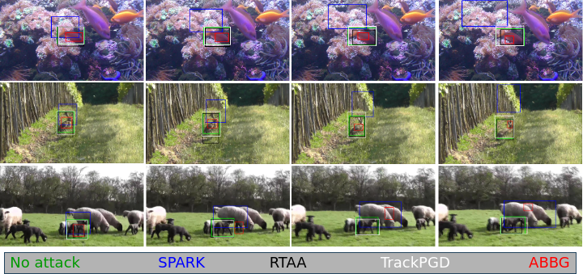
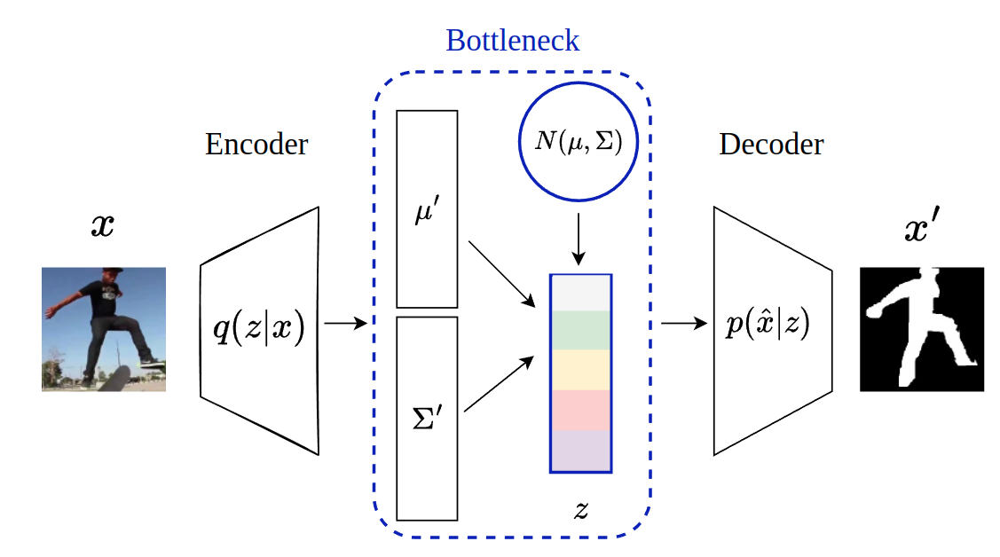
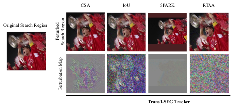
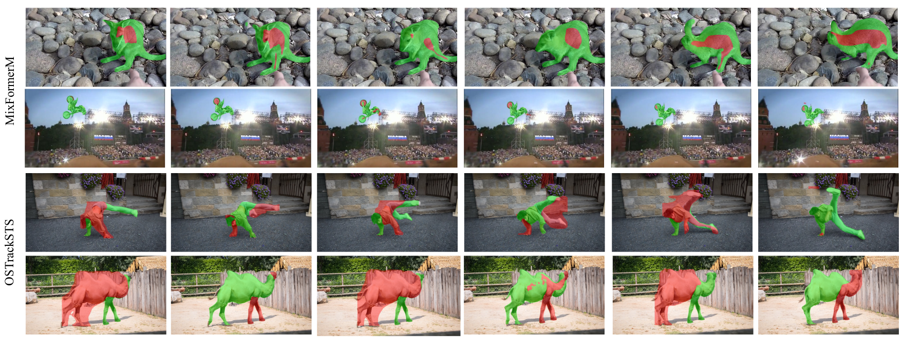
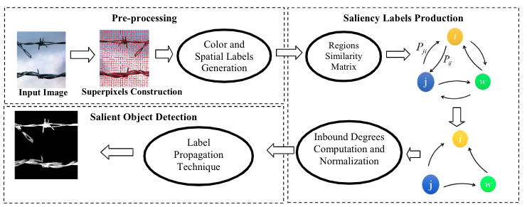
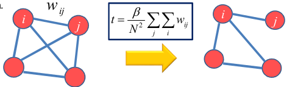

Machine Learning and Computer Vision Scientist with 12+ years of experience spanning research and industry. I specialize in deep learning, transformer architectures, OCR and document intelligence systems, object segmentation/tracking and adversarial robustness. I currently work as a Data Scientist at Employment and Social Development Canada (ESDC).
I hold a Ph.D. in Electrical Engineering from Université Laval and Mila, supervised by Prof. Christian Gagné and Prof. Jean-François Lalonde. My doctoral research focused on adversarial robustness of learning-based object trackers; designing attack frameworks that expose critical vulnerabilities in state-of-the-art transformer trackers.
Prior to my PhD, I conducted research on single-object tracking via deep reinforcement learning at LVSN, Université Laval, and built computer vision systems for real-world industry applications.
Projects

Mila – Quebec AI Institute / LVSN, Université Laval · 2023 – 2025
Designed adversarial attack frameworks targeting state-of-the-art transformer-based object trackers. Achieved up to 98% degradation in tracker robustness under structured perturbations on VOT2022-STS. Conducted large-scale evaluation across GOT10k, UAV123, and VOT benchmarks. Contributed diffusion-based defense mechanisms to enhance model resilience.
Project Page (ReproStudy) / Project Page (TrackPGD) / Code / Poster / SlidesPublished in TMLR 2024 · Presented at NeurIPS 2024 · CRV 2025 · NeurIPS 2024 Workshop

Mila – Quebec AI Institute / LVSN, Université Laval · 2024
Developed the ABBG attack — a novel adversarial framework that generates perturbed bounding boxes to fool visual object trackers. Evaluated extensively on standard tracking benchmarks, demonstrating significant vulnerability in robust transformer trackers.
Project Page / Code / Poster / SlidesNeurIPS 2024 Workshop on New Frontiers in Adversarial Machine Learning

LVSN, Université Laval · 2018 – 2023
Proposed a β-Multivariational Autoencoder (β-MVAE) for learning disentangled representations from video frames. Reformulated single-object tracking as an episodic reinforcement learning problem using Soft Actor-Critic (SAC). Enhanced video segmentation performance via U-Net-based posterior modeling.
Poster / Slides / CodeICML 2024 Workshop WiML

Employment and Social Development Canada (ESDC) · 2025 – Present
Led end-to-end development of a domain-specific OCR system using Vision-Language Models and transformer-based architectures. Deployed ML pipelines with multi-GPU distributed training and integrated custom model backbones into production pipelines for large-scale government document digitization.
Skills: Vision-Language Models · Transformers · OCR · Distributed Training · MLOps
ORIGYN Foundation · 2020 – 2021
Built computer vision pipelines for biometric authentication of luxury goods, leveraging texture and micro-detail analysis. Developed object recognition and image quality assessment models achieving 98.7% validation accuracy. Implemented distributed training on AWS with automated CI/CD model integration pipelines.
Skills: Computer Vision · Object Recognition · Image Quality Assessment · AWS · CI/CD
Shiraz University of Technology · 2013 – 2016
Developed graph-based saliency detection algorithms using local, global, and mixed feature representations. Proposed multiple methods including random graph and global contrast graph approaches for salient object detection in images.
Paper 1 / Paper 2 / Paper 3Multimedia Tools and Applications 2018 · Signal, Image and Video Processing 2018 · SPIS 2015

Global Trade Company Ltd. · 2016 – 2017
Researched and implemented real-time multi-object tracking algorithms for cluttered video frames, incorporating salient object detection to prioritize targets. Designed and deployed a MATLAB and C++ tracking system using OpenCV for moving-camera video streams, improving tracking speed by 30%.
Skills: Multi-Object Tracking · OpenCV · C++ · MATLAB · Real-Time SystemsTechnologie Intelligence Image · 2020
Designed and prototyped an AI-powered shoe size matching application using pre-trained CNNs and 3D foot estimation techniques. Delivered a functional prototype with strategic recommendations for data collection and model optimization.
Skills: CNNs · 3D Estimation · Prototype Development · PyTorchWebsite template adopted from Michael Niemeyer.